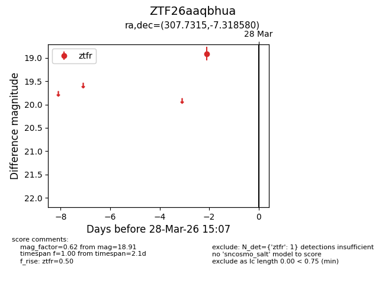
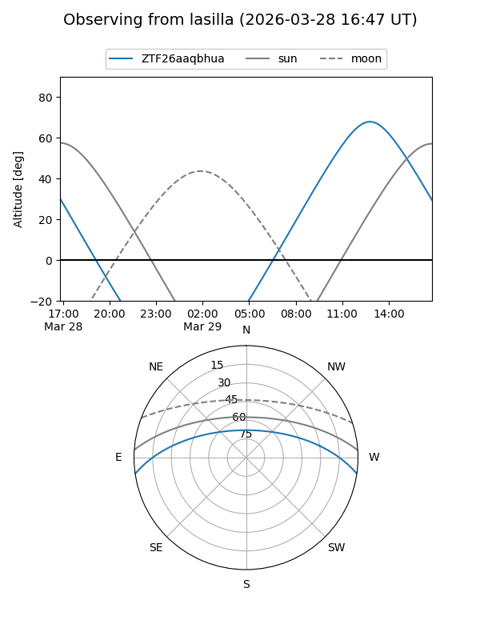
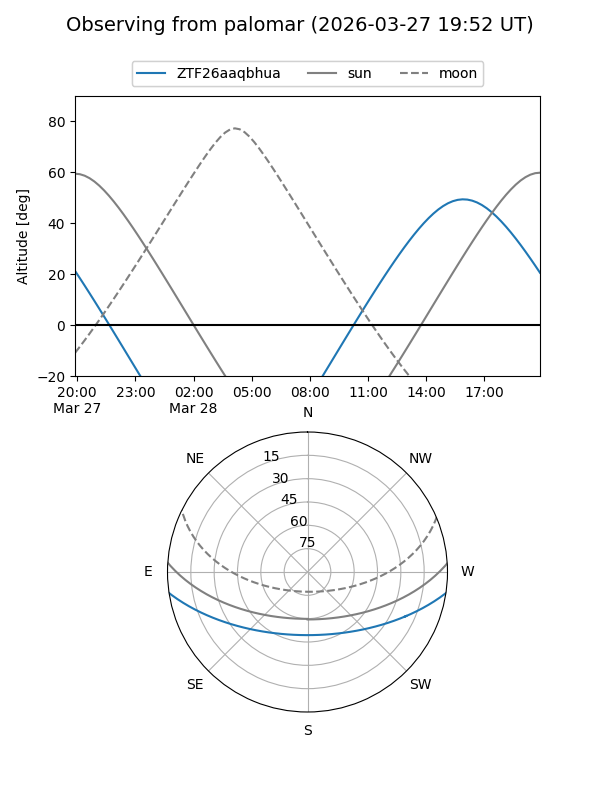

ZTF26aaqbhua
Target ZTF26aaqbhua at 2026-03-28 15:10
Aliases and brokers:
FINK: link
Lasair: link
ALeRCE: link
alt names
ZTF26aaqbhua (ztf,fink_ztf)
Coordinates:
equatorial (ra, dec) = 307.7315,-7.31858
equatorial (HMS+DMS) = 20:30:55.56,-07:19:06.89
galactic (l, b) = (37.8132,-25.42689)
Flags:
Photometry:
last ztfr=18.91
1 ztfr detections
Lightcurve

Visibility


Additional plots